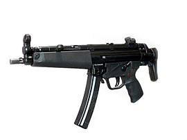

Пистолет пулемет MP-5
Описание
Автоматика MP5 действует по принципу полусвободного роликового затвора, стрельба ведётся с закрытого затвора. Ударно-спусковой механизм куркового типа обеспечивает стрельбу в автоматическом и одиночном режиме. Предохранитель одновременно является переводчиком режима огня. Его рычаг расположен возле рукоятки управления огнём с левой стороны. При постановке на предохранитель блокируется спусковой крючок и курок, что обеспечивает безопасность в обращении с оружием.
Замедление движения затвора осуществляется роликами, одновременно играющими роль ускорителя затворной рамы. Такая конструкция позволила снизить отдачу и повысить кучность стрельбы. Прицел барабанного типа, диоптрический или открытый (выбирается поворотом барабана целика).
История:
Пистолет-пулемёт MP5 был впервые представлен фирмой Heckler & Koch в 1966 году под названием HK54. Это название было выбрано согласно старой системе нумерации моделей фирмы: число «5» определяло оружие как пистолет-пулемёт, а число «4» определяло, что пистолет-пулемёт создан под патрон 9×19 мм Парабеллум. Современное название он получил после того, как в середине 1966 года правительство ФРГ приняло его на вооружение полиции и пограничной службы как Maschinenpistole 5 или сокращённо MP5. Благодаря использованию пистолета-пулемёта немецким контртеррористическим отрядом GSG 9, который являлся частью пограничной службы, аналогичные специальные подразделения других западных стран получили возможность ознакомиться с его характеристиками.
Для расширения области возможных применений пистолетов-пулемётов были созданы различные ответвления: малокалиберное личное оружие самообороны (англ. Personal Defense Weapon (PDW)), например HK MP7 и компактные карабины такие как G36C — укороченный вариант автомата HK G36 и XM8, также основанный на G36. Фирма Heckler & Koch начала замещение линейки MP5 более дешёвой моделью HK UMP, которая доступна в вариантах под патроны .45 ACP, .40 S&W и 9×19 мм Парабеллум. Однако, поскольку UMP использует более простую автоматику со свободным затвором, он не может быть достойным конкурентом MP5 для требовательных стрелков.